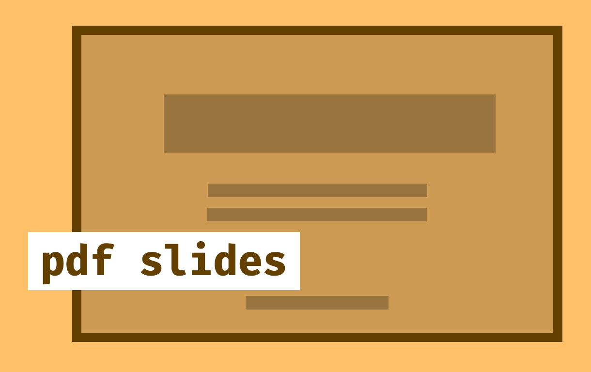

Gabriel Waite
GitHub · Google Scholar · LinkedIn
Personal e–mail: gabrielwaite1999@outlook.com
Student e–mail: gabriel.waite@student.uts.edu.au
I recently posted two new preprints on arXiv!
Physically-Motivated Guiding States for Local Hamiltonians
This work was done in collaboration with Karl Lin, Samuel Elman and Michael Bremner.
Approximate Counting in Local Lemma Regimes
This work was done in collaboration with Ryan Mann.
Hello, I am Gabriel Waite, currently a PhD student at the University of Technology Sydney, studying Quantum Complexity and Algorithms under the supervision of Michael Bremner, Troy Lee and Ryan Mann.
I was trained in theoretical physics, but my interests increasingly shifted toward computation and computer science. I became particularly drawn to the algorithmic and computational challenges that arise in the study of quantum systems, which ultimately motivated me to pursue a PhD.
My research journey has allowed me to build a strong foundation in programming, algorithms, and theoretical computer science, while remaining grounded in physical intuition. I value careful, deliberate learning and enjoy developing both conceptual understanding and practical technical skills.
Surrounded by talented peers and mentors, I am continually refining my perspective and exploring new ideas at the interface of physics and computation.
My passions drive me to find opportunities to apply my knowledge and skills in practical ways. I am always looking for new challenges and projects to work on, whether it be in research, coding or other areas.
My research focuses on Hamiltonian Complexity Theory including the local Hamiltonian problem, computation of partition functions, ground state preparation and quantum optimisation algorithms.
As a part of my research I created the Hamiltonian Jungle — an online repository for classifying known Hamiltonian Complexity problems!
My background is in Theoretical Physics. I graduated from the University of Leeds in 2022 with First Class Honours degrees, MPhys and BSc in Theoretical Physics.
I specialised in Quantum Optics, focusing on using a new local position space field theory construction for photons. My Master's thesis studied locally acting mirror Hamiltonians using said theory. Our research paper was featured as an Editor's Suggestion in Physical Review A!
During my undergraduate degree I enjoyed many aspects of Theoretical Physics. My main interests lie with:
My research is supported by the Sydney Quantum Academy, commencing in April 2023 and running until 2027.
Quantum Counting Problems and Approximate Solutions
Date to be announced!
The Complexity of Local Stoquastic Hamiltonians on 2D Lattices
My research focuses on Hamiltonian Complexity Theory, including the local Hamiltonian problem, computation of partition functions, ground state preparation and quantum optimisation algorithms.
Approximate Counting in Local Lemma Regimes
‐ (2025)
with: Ryan Mann
Physically-Motivated Guiding States for Local Hamiltonians
‐ (2025)
with: Karl Lin, Samuel Elman and Michael Bremner
I enjoy coding in my spare time, and have worked on a few projects.
This website!
I updated my personal website, getting more into HTML and CSS.
It was about time for a refresh!
I am not a web developer, but I have enjoyed learning how to make this website and customise it to my liking.
As I continue to learn, I hope to add more features and improve the overall design!
Learning C
I have recently started learning C, working through the book The C Programming Language by Kernighan and Ritchie.
I do not come from a computing background, but have picked up a lot of interest in low-level computing.
This was motivated by a recent preprint of mine - On the complexity of the succinct state local Hamiltonian problem, where I had to design algorithms to encode algebraic numbers in a succinct way.
State Preparation
I was recently involved in a project to implement a state preparation algorithm using the Quantum Signal Processing framework among other methods, such as QROM.
My job was to compute and code the elements of this QSP algorithm.
A significant portion of this project was analytical, e.g., finding a nice form for the Taylor series coefficients of the target function (Gaussian).
I coded four Python scripts, each with a different purpose: CoefficientFinder.py, AngleAnalysis.py, QSPStatePrep.py and StateCoeffAnalysis.py.
Hamiltonian Simulation
A project for a course I undertook during the first year of my PhD was to implement a Hamiltonian simulation algorithm.
Myself and two fellow students wrote both classical and quantum algorithms to simulate the time evolution of a small local Pauli Hamiltonians.
My primary contribution was to code the Trotterisation method.